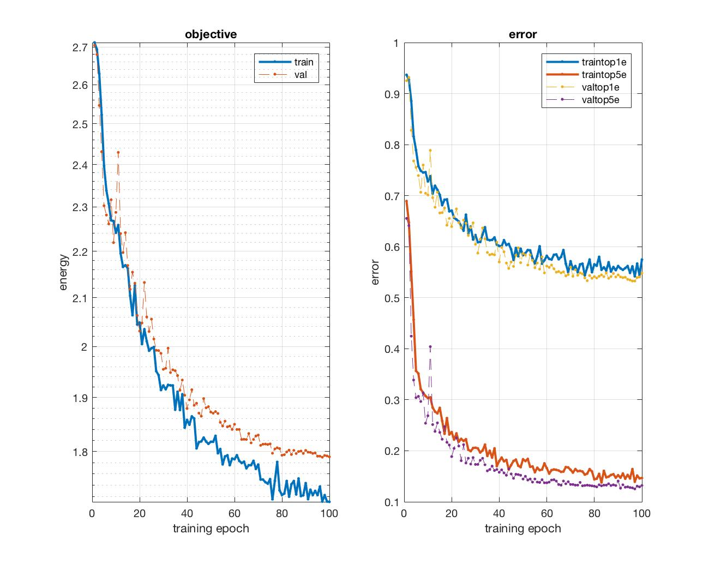
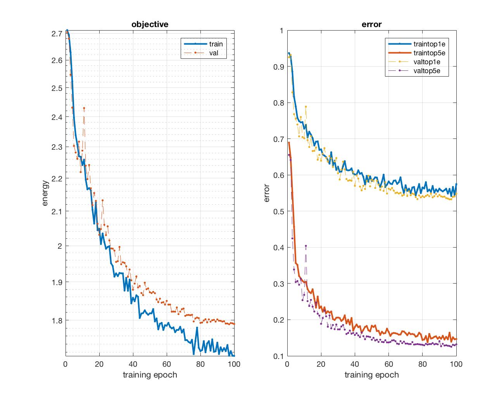
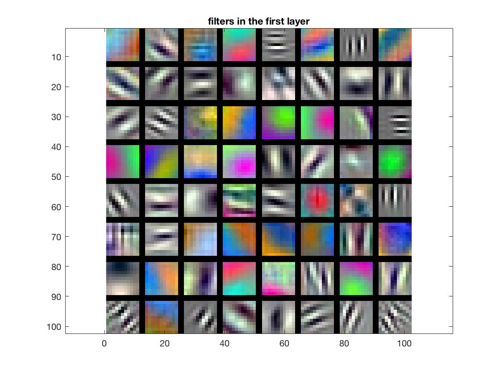
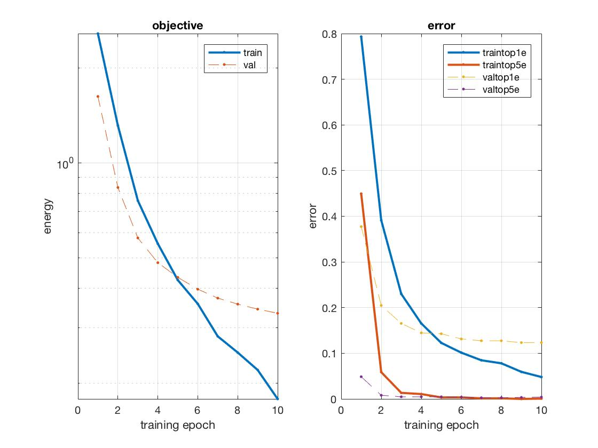

Project 6: Deep Learning
Answered Questions
Question 1
Photographs of the same scene with high and low contrast will output different values across the NN layers. Subtracting the mean image from each image improves contrast invariance. Normalizing zero-centers the data thus the relative contrasts are closer together.
Question 2
Pooling takes the highest value within a window and updates the center pixel to that value. A pooling operation with a stride greater than 1 will also downsample the image. Max pooling and downsampling reduces the dimensionality of the image. Downsampling combats overfitting by reducing the input data and thus the number of parameters in the subsequent layers.
Question 3
Sigmoid activation functions can "die" when input with very high or very low values. The derivatives at these extremes is approximately zero, thus backpropagation will do little to update the weights of the previous layers.
Additionally, sigmoid activation functions are nonlinear thus operations on this layer can be computationally expensive. ReLU activation functions are linear, and their derivatives are easy to compute.
ReLU perceptrons can also "die" when input with negative values or zero. The derivative of the dead ReLU perceptron is zero thus the perceptron and the weights from previous layers may not update during backpropagation.
Part 1
Jittering
In getBatch() I generate a random number between 10 and 30 of images to flip. I generate random indices and flip those images. Those images are returned in the batch. Jittering increases the shallow network performance ~10%.
Normalization
In proj6_part1_setup_data.m I postprocess the images by subtracting the mean image from all the training and validation images. Normalization improves performance ~15%.
Regularization
I add a dropout layer, with a dropout rate of 0.5, before the final convolution. The dropout layer improves performance ~10%.
Shallow Network Performance
Training the shallow network with 30 epochs and a learning rate of 0.0001 achieves a ~65-70% accuracy.
Deeper Network Structure
- Convolution
- Weight Size: 9x9x1x10
- Stride: 1
- Pad: 0
- Max Pool
- Window Size: 4x4
- Stride: 4
- ReLU
- Dropout
- Dropout Rate: 0.5
- Convolution
- Weight Size: 5x5x1x10
- Stride: 1
- Pad: 0
- Max Pool
- Window Size: 2x2
- Stride: 2
- ReLU
- Dropout
- Dropout Rate: 0.5
- Convolution
- Filter Size: 5x5x10x15
- Stride: 1
- Pad: 0
- Softmax Loss
Deeper Network Performance
 

An initial run with a learning rate of 0.001 produces erratic behavior towards the end of training. On my second run I implemented a logarithmic training rate from 0.001 to 0.00001 over 100 epochs. The figures above show the filters and the error convergence for the second run. This implementation removes the noise, but the accuracy still converges to ~45%.
Part 2
proj6_part2_setup_data.m
In proj6_part2_setup_data.m I resize the images to 224x224 and repeat the grayscale images across 3 channels. I postprocess the data by subtracting the average image from the data images.
proj6_part2_cnn_init.m
In proj6_part2_cnn_init.m I overwrite the default settings of the network. I replace the fc8 parameters, with weights of size 1x1x4096x15, stride 1, and pad 0. I change the final layer to a softmax loss function. Finally, I add a dropout layer with a dropout rate of 0.5 before fc8.
Results
After 10 epochs the accuracy converges to ~87%.
 